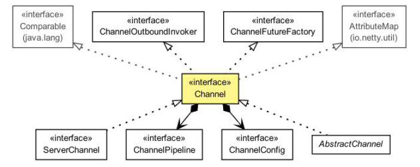

传输
Table of Contents
本章将涵盖很多 transport(传输)，他们的用例以及 API：
- NIO
- OIO
- Local(本地)
- Embedded(内嵌)
网络应用程序提供了人与系统通信的信道，但是，当然 他们也将大量的数据从一个地方移到到另一个地方。如何做到这一点取决于具体的网络传输，但转移始终是相同的：字节通过线路。传输的概念帮助我们抽象掉的底层数据转移的机制。所有人都需要知道的是，字节在被发送和接收
如果你已经做过 Java中的网络编程，你可能会发现在某些时候你必须支持比预期更多的并发连接。如果你再尝试从阻塞切换到非阻塞传输，则可能遇会到的问题，因为 Java 的公开的网络 API 来处理这两种情况有很大的不同
Netty 在传输层是统一的API，这使得比你用 JDK 实现更简单。你无需重构整个代码库。总之，你可以省下时间去做其他更富有成效的事
在本章中，我们将研究这个统一的 API，与 JDK 进行演示对比，可以见它具有更大的易用性。我们将介绍不同的捆绑在 Netty 的传输实现和适当的的用例。吸收这些信息后，你就知道如何选择适合您的应用的最佳选择
Transport 的迁移
从一个简单的应用程序开始，这个应用程序什么都不做，只是接受客户端连接并发送“Hi!”字符串消息到客户端，发送完了就断开连接
使用JDK API 实现
OIO
public class PlainOioServer { public void serve(int port) throws IOException { final ServerSocket socket = new ServerSocket(port); //1 绑定服务器到指定的端口 try { for (;;) { final Socket clientSocket = socket.accept(); //2 接受一个连接 System.out.println("Accepted connection from " + clientSocket); new Thread(new Runnable() { //3 创建一个新的线程来处理连接 @Override public void run() { OutputStream out; try { out = clientSocket.getOutputStream(); out.write("Hi!\r\n".getBytes(Charset.forName("UTF-8"))); //4 将消息发送到连接的客户端 out.flush(); clientSocket.close(); //5 一旦消息被写入和刷新时就关闭连接 } catch (IOException e) { e.printStackTrace(); try { clientSocket.close(); } catch (IOException ex) { // ignore on close } } } }).start(); //6 启动线程 } } catch (IOException e) { e.printStackTrace(); } } }
上面的方式可以工作正常，但是这种阻塞模式在大连接数的情况就会有很严重的问题，如客户端连接超时，服务器响应严重延迟，性能无法扩展。为了解决这种情况，我们可以使用异步网络处理所有的并发连接，但问题在于 NIO 和 OIO 的 API 是完全不同的，所以一个用OIO开发的网络应用程序想要使用NIO重构代码几乎是重新开发
NIO
public class PlainNioServer { public void serve(int port) throws IOException { ServerSocketChannel serverChannel = ServerSocketChannel.open(); serverChannel.configureBlocking(false); ServerSocket ss = serverChannel.socket(); InetSocketAddress address = new InetSocketAddress(port); ss.bind(address); //1 绑定服务器到指定端口 Selector selector = Selector.open(); //2 打开 selector 处理 channel serverChannel.register(selector, SelectionKey.OP_ACCEPT); //3 注册 selector 到 serverSocket ，并指定这是接受任意连接 final ByteBuffer msg = ByteBuffer.wrap("Hi!\r\n".getBytes()); for (;;) { try { selector.select(); //4 等待新的事件来处理。这将阻塞，直到一个事件是传入 } catch (IOException ex) { ex.printStackTrace(); // handle exception break; } Set<SelectionKey> readyKeys = selector.selectedKeys(); //5 从收到的所有事件中 获取 SelectionKey 实例 Iterator<SelectionKey> iterator = readyKeys.iterator(); while (iterator.hasNext()) { SelectionKey key = iterator.next(); iterator.remove(); try { if (key.isAcceptable()) { //6 检查该事件是一个新的连接准备好接受 ServerSocketChannel server = (ServerSocketChannel)key.channel(); SocketChannel client = server.accept(); client.configureBlocking(false); client.register(selector, SelectionKey.OP_WRITE | SelectionKey.OP_READ, msg.duplicate()); //7 接受客户端，并用 selector 进行注册 System.out.println( "Accepted connection from " + client); } if (key.isWritable()) { //8 检查 socket 是否准备好写数据 SocketChannel client = (SocketChannel)key.channel(); ByteBuffer buffer = (ByteBuffer)key.attachment(); while (buffer.hasRemaining()) { if (client.write(buffer) == 0) { //9 将数据写入到所连接的客户端。如果网络饱和，连接是可写的，那么这个循环将写入数据，直到该缓冲区是空的 break; } } client.close(); //10 关闭连接 } } catch (IOException ex) { key.cancel(); try { key.channel().close(); } catch (IOException cex) { // 在关闭时忽略 } } } } } }
即使它们实现的功能是一样，但是代码与OIO完全不同
使用Netty实现
OIO
public class NettyOioServer { public void server(int port) throws Exception { final ByteBuf buf = Unpooled.unreleasableBuffer( Unpooled.copiedBuffer("Hi!\r\n", Charset.forName("UTF-8"))); EventLoopGroup group = new OioEventLoopGroup(); try { ServerBootstrap b = new ServerBootstrap(); //1 创建一个 ServerBootstrap b.group(group) //2 使用 OioEventLoopGroup 允许阻塞模式 .channel(OioServerSocketChannel.class) .localAddress(new InetSocketAddress(port)) .childHandler(new ChannelInitializer<SocketChannel>() { //3 指定 ChannelInitializer 将给每个接受的连接调用 @Override public void initChannel(SocketChannel ch) throws Exception { ch.pipeline().addLast(new ChannelInboundHandlerAdapter() { //4 添加的 ChannelHandler 拦截事件，并允许他们作出反应 @Override public void channelActive(ChannelHandlerContext ctx) throws Exception { ctx.writeAndFlush(buf.duplicate()).addListener(ChannelFutureListener.CLOSE);//5 写信息到客户端，并添加 ChannelFutureListener 当一旦消息写入就关闭连接 } }); } }); ChannelFuture f = b.bind().sync(); //6 绑定服务器来接受连接 f.channel().closeFuture().sync(); } finally { group.shutdownGracefully().sync(); //7 释放所有资源 } } }
NIO
下面是 Netty NIO 的代码，只是改变了一行代码，就从 OIO 传输 切换到了 NIO：
public class NettyNioServer { public void server(int port) throws Exception { final ByteBuf buf = Unpooled.unreleasableBuffer( Unpooled.copiedBuffer("Hi!\r\n", Charset.forName("UTF-8"))); NioEventLoopGroup group = new NioEventLoopGroup(); try { ServerBootstrap b = new ServerBootstrap(); //1 创建一个 ServerBootstrap b.group(new NioEventLoopGroup(), new NioEventLoopGroup()) // 2 使用 NioEventLoopGroup 允许非阻塞模式 .channel(NioServerSocketChannel.class) .localAddress(new InetSocketAddress(port)) .childHandler(new ChannelInitializer<SocketChannel>() { //3 指定 ChannelInitializer 将给每个接受的连接调用 @Override public void initChannel(SocketChannel ch) throws Exception { ch.pipeline().addLast(new ChannelInboundHandlerAdapter() { //4 添加的 ChannelInboundHandlerAdapter() 接收事件并进行处理 @Override public void channelActive(ChannelHandlerContext ctx) throws Exception { ctx.writeAndFlush(buf.duplicate()) //5 写信息到客户端，并添加 ChannelFutureListener 当一旦消息写入就关闭连接 .addListener(ChannelFutureListener.CLOSE); } }); } }); ChannelFuture f = b.bind().sync(); //6 绑定服务器来接受连接 f.channel().closeFuture().sync(); } finally { group.shutdownGracefully().sync(); //7 释放所有资源 } } }
因为 Netty 使用相同的 API 来实现每个传输，它并不关心你使用什么来实现。Netty 通过操作接口Channel 、ChannelPipeline 和 ChannelHandler来实现
Transport API
Transport API 的核心是 Channel 接口，用于所有的出站操作，见下图：

如上图所示，每个 Channel 都会分配一个 ChannelPipeline 和ChannelConfig：
- ChannelConfig 负责设置并存储 Channel 的配置，并允许在运行期间更新它们。传输一般有特定的配置设置，可能实现了 ChannelConfig 的子类型
- ChannelPipeline 容纳了使用的 ChannelHandler 实例，这些ChannelHandler 将处理通道传递的“入站”和“出站”数据以及事件，ChannelHandler 的实现允许你改变数据状态和传输数据
可以使用 ChannelHandler 做下面一些事情：
- 传输数据时，将数据从一种格式转换到另一种格式
- 异常通知
- Channel 变为 active（活动） 或 inactive（非活动） 时获得通知（Channel 被注册或注销时从 EventLoop 中获得通知）
- 通知用户特定事件
ChannelPipeline 实现了常用的 Intercepting Filter（拦截过滤器）设计模式
可以在运行时根据需要添加 ChannelHandler 实例到ChannelPipeline 或从 ChannelPipeline 中删除，这能帮助我们构建高度灵活的 Netty 程序。例如，可以支持 STARTTLS 协议，只需通过加入适当的 ChannelHandler（这里是 SslHandler）到的ChannelPipeline 中，当被请求这个协议时
此外，访问指定的 ChannelPipeline 和 ChannelConfig，你能在Channel 自身上进行操作。Channel 提供了很多方法，如下列表：
| 方法名称 | 描述 |
| eventLoop() | 返回分配给Channel的EventLoop |
| pipeline() | 返回分配给Channel的ChannelPipeline |
| isActive() | 返回Channel是否激活，已激活说明与远程连接对等 |
| localAddress() | 返回已绑定的本地SocketAddress |
| remoteAddress() | 返回已绑定的远程SocketAddress |
| write() | 写数据到远程客户端，数据通过ChannelPipeline传输过去 |
| flush() | 刷新先前的数据 |
| writeAndFlush(…) | 一个方便的方法用户调用write(…)而后调用y flush() |
实例
写数据到Channel
写数据到远程已连接客户端可以调用Channel.write()方法，如下代码：
Channel channel = ...; // 获取channel的引用 ByteBuf buf = Unpooled.copiedBuffer("your data", CharsetUtil.UTF_8); //1 创建 ByteBuf 保存写的数据 ChannelFuture cf = channel.writeAndFlush(buf); //2 写数据，并刷新 cf.addListener(new ChannelFutureListener() { //3 添加 ChannelFutureListener 即可写操作完成后收到通知 @Override public void operationComplete(ChannelFuture future) { if (future.isSuccess()) { //4 写操作没有错误完成 System.out.println("Write successful"); } else { System.err.println("Write error"); //5 写操作完成时出现错误 future.cause().printStackTrace(); } } });
多线程
Channel 是线程安全的，它可以被多个不同的线程安全的操作，在多线程环境下，所有的方法都是安全的。正因为 Channel 是安全的，可以存储对Channel的引用，并在需要的时候使用它写入数据到远程已连接的客户端，使用多线程也是如此。下面的代码是一个简单的多线程例子：
final Channel channel = ...; // 获取channel的引用 final ByteBuf buf = Unpooled.copiedBuffer("your data", CharsetUtil.UTF_8).retain(); //1 创建一个 ByteBuf 保存写的数据 Runnable writer = new Runnable() { //2 创建 Runnable 用于写数据到 channel @Override public void run() { channel.writeAndFlush(buf.duplicate()); } }; Executor executor = Executors.newCachedThreadPool(); //3 使用线程池来执行任务 //写进一个线程 executor.execute(writer); //4 手写一个任务，在一个线程中执行 //写进另外一个线程 executor.execute(writer); //5 手写一个任务，在另一个线程中执行
自带的 Transport
Netty 自带了一些传输协议的实现，虽然没有支持所有的传输协议，但是其自带的已足够我们来使用。Netty应用程序的传输协议依赖于底层协议，本节我们将学习Netty中的传输协议
Netty中的传输方式有如下几种：
| 种类 | 包 | 描述 |
| NIO | io.netty.channel.socket.nio | 基于java.nio.channels的工具包，使用选择器作为基础的方法 |
| OIO | io.netty.channel.socket.oio | 基于java.net的工具包，使用阻塞流 |
| Local | io.netty.channel.local | 用来在虚拟机之间本地通信 |
| Embedded | io.netty.channel.embedded | 嵌入传输，它允许在没有真正网络的传输中使用 ChannelHandler，可以非常有用的来测试ChannelHandler的实现 |
NIO
NIO传输是目前最常用的方式，它通过使用选择器提供了完全异步的方式操作所有的 I/O，NIO 从Java 1.4才被提供
NIO 中可以注册一个通道或获得某个通道的改变的状态，通道状态有下面几种改变：
- 一个新的 Channel 被接受并已准备好
- Channel 连接完成
- Channel 中有数据并已准备好读取
- Channel 发送数据出去
处理完改变的状态后需重新设置他们的状态，用一个线程来检查是否有已准备好的 Channel，如果有则执行相关事件。在这里可能只同时一个注册的事件而忽略其他的。选择器所支持的操作在 SelectionKey 中定义，具体如下：
| 方法名称 | 描述 |
| OP_ACCEPT | 有新连接时得到通知 |
| OP_CONNECT | 连接完成后得到通知 |
| OP_REA | 准备好读取数据时得到通知 |
| OP_WRITE | 写入更多数据到通道时得到通知 |
- 新信道注册 WITH 选择器
- 选择处理的状态变化的通知
- 以前注册的通道
- Selector.select()方法阻塞，直到新的状态变化接收或配置的超时已过
- 检查是否有状态变化
- 处理所有的状态变化
- 在选择器操作的同一个线程执行其他任务
有一种功能，目前仅适用于 NIO 传输叫什么 zero-file-copy ，这使您能够快速，高效地通过移动数据到从文件系统传输内容网络协议栈而无需复制从内核空间到用户空间。这可以使 FTP 或 HTTP 协议有很大的不同
然而，并非所有的操作系统都支持此功能。此外，你不能用它实现数据加密或压缩文件系统，仅支持文件的原生内容。另一方面，传送的文件原本已经加密的是完全有效的
OIO
Netty 中，该 OIO 传输代表了一种妥协。它通过了 Netty 的通用 API 访问但不是异步，而是构建在 java.net 的阻塞实现上。任何人下面讨论这一点可能会认为，这个协议并没有很大优势。但它确实有它有效的用途
假设你需要的端口使用该做阻塞调用库（例如 JDBC）。它可能不适合非阻塞。相反，你可以在短期内使用 OIO 传输，后来移植到纯异步的传输上。让我们看看它是如何工作的
在 java.net API，通常有一个线程接受新的连接到达监听在ServerSocket，并创建一个新的线程来处理新的 Socket 。这是必需的，因为在一个特定的 socket的每个 I/O 操作可能会阻塞在任何时间。在一个线程处理多个 socket 易造成阻塞操作，一个 socket 占用了所有的其他人
Netty 利用了 SO_TIMEOUT 标志，可以设置在一个 Socket。这 timeout 指定最大毫秒数量用于等待 I/O 的操作完成。如果操作在指定的时间内失败，SocketTimeoutException 会被抛出。Netty中捕获该异常并继续处理循环。在接下来的事件循环运行，它再次尝试。像 Netty 的异步架构来支持 OIO 的话，这其实是唯一的办法。当 SocketTimeoutException 抛出时，执行 stack trace

- 线程分配给 Socket
- Socket 连接到远程
- 读操作（可能会阻塞）
- 读完成
- 处理可读的字节
- 执行提交到 socket 的其他任务
- 再次尝试读
本地 Transport 与 JVM 交互
Netty 提供了“本地”传输，为运行在同一个 Java 虚拟机上的服务器和客户之间提供异步通信。此传输支持所有的 Netty 常见的传输实现的 API
在此传输中，与服务器 Channel 关联的 SocketAddress 不是“绑定”到一个物理网络地址中，而它被存储在注册表中，只要服务器是运行的。当 Channel 关闭时它会注销。由于传输不接受“真正的”网络通信，它不能与其他传输实现互操作。因此，客户端是希望连接到使用当地的交通必须使用它，以及一个服务器。除此限制之外，它的使用是与其他的传输是相同的
内嵌 Transport
Netty中 还提供了可以嵌入 ChannelHandler 实例到其他的 ChannelHandler 的传输，使用它们就像辅助类，增加了灵活性的方法，使您可以与你的 ChannelHandler 互动
该嵌入技术通常用于测试 ChannelHandler 的实现，但它也可用于将功能添加到现有的 ChannelHandler 而无需更改代码。嵌入传输的关键是Channel 的实现，称为 EmbeddedChannel
Transport 选择
并不是所有传输都支持核心协议，这会限制你的选择，具体看下表：
| Transport | TCP | UDP | SCTP* | UDT |
| NIO | • | • | • | • |
| OIO | • | • | • | • |
*指目前仅在 Linux 上的支持
虽然只有 SCTP 具有这些特殊的要求，对应的特定的传输也有推荐的配置。一个服务器平台可能会需要支持较高的数量的并发连接比单个客户端的话。下面是你可能遇到的用例:
- OIO: 在低连接数、需要低延迟时、阻塞时使用
- NIO: 在高连接数时使用
- Local: 在同一个JVM内通信时使用
- Embedded: 测试ChannelHandler时使用